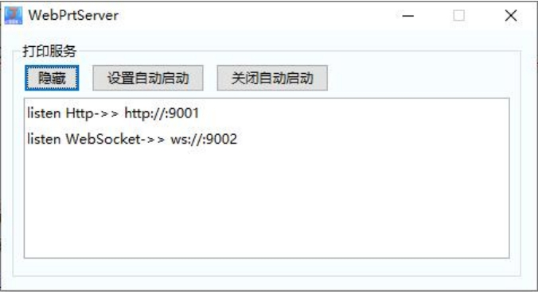
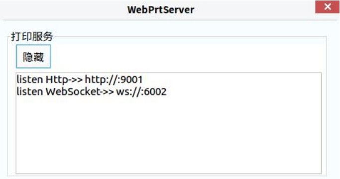
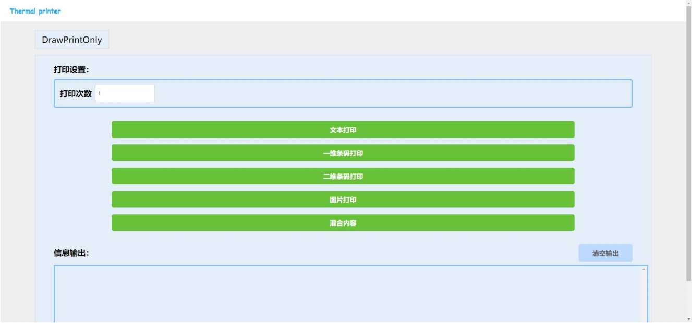
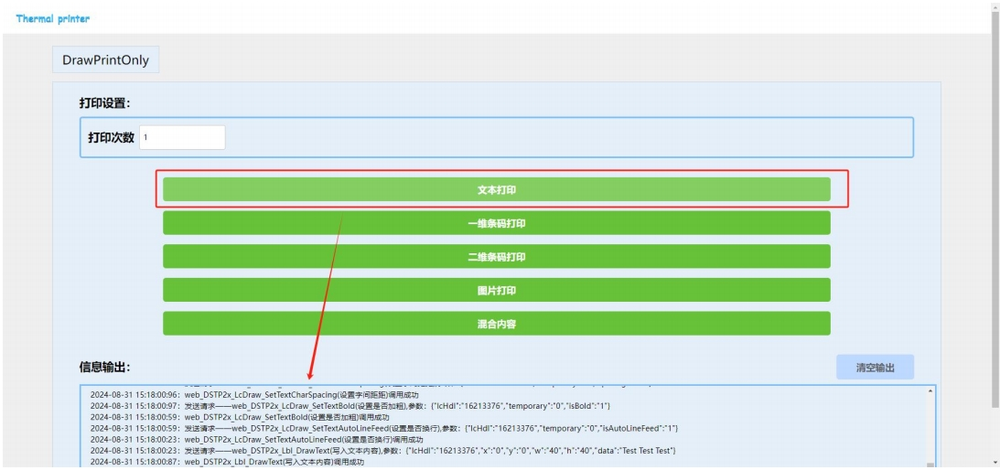

第六章、 DSTP2xWebPrtServer 使用说明
d
1、软件系统环境
1.DSTP2xWebPrtServer 是一款可实现打印机与网页进行通讯的服务，用户需要在Windows 或 Linux 电脑上运行对应架构版本的 DSTP2xWebPrtServer；
2.同一局域网内的其他设备就可以通过此电脑的 IP 与打印机进行通讯，而不在同一局域网内的设备则可以通过路由器映射 IP 的方式来实现与打印机进行通讯；
3.支持系统：win XP、win 7、win 10、win 11、centos、KylinOS 等；
4.支持浏览器：谷歌 Chrome、IE、火狐、Safar、奇安信可信等主流浏览器；；
2、运行说明
Windows：
1.解压压缩包（版本会不断升级，具体名称以实际为准）；
2.解压后，选择进入 对应架构系统开发包 文件夹；
3.解压后，进入 web_server\Win32 或 web_server\x64 的文件夹；
4.最后双击运行 DSTP2xWebPrtServer.exe，如下图 2.1 所示；
5.进入/samplecode/javascript/路径下，打开其中一个 html 网页，即可进行演示；

Linux：
1.解压压缩包（版本会不断升级，具体名称以实际为准）；
2.解压后，选择进入 对应架构系统开发包 文件夹
3.解压后，进入 web_server 的文件夹；
4.鼠标右键点击“打开终端”；
5.输入命令：sudo su 输入密码，切换到root用户，如权限不足输入chmod -R 777 * 再执行
6.命令运行：./map.ds，用于给予权限运行基于SDK的程序来操控USB连接方式的打印机
7.命令运行：./DSTP2xWebPrtServer.out，运行后如下图 2.2 所示；如果系统无界面则运行“DSTP2xWebPrtServer_Console.out”
8.进入/samplecode/javascript/路径下，打开其中一个 html 网页，即可进行演示；

3、JavaScript 示例程序使用流程
3.1、打开示例
在对应架构 samplecode\javascript 目录下，选择 JavaScript 示例用浏览器打开 index.html（下图为 DrawPrintOnly 相关示例界面）。

3.2、执行打印
连接打印机后点击打印机，调用成功或失败在下方均有信息输出（下图演示为文本打印输出）。
